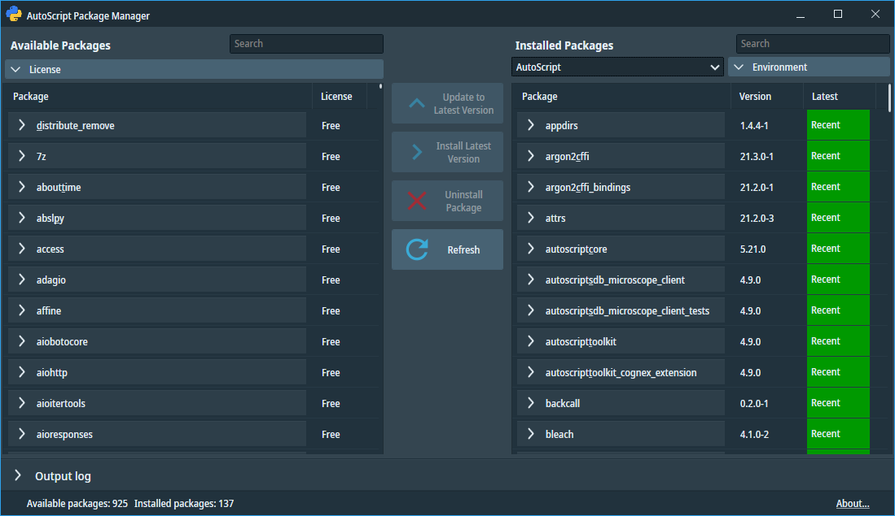
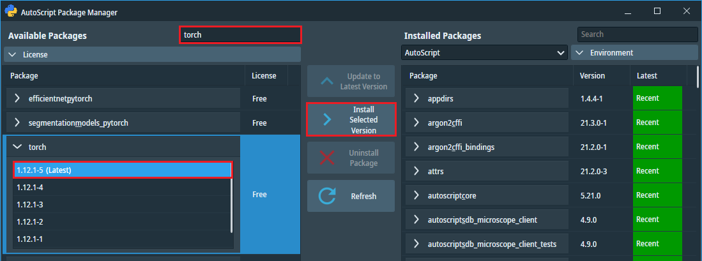

Python package management
This chapter summarizes methods for installing, updating, or removing Python packages from virtual environments.
We recommend starting with the chapter on Python distribution to gain a basic understanding of the Enthought Deployment Manager (EDM) tool.
There are three options for managing packages:
- AutoScript Package Manager (preferred method)
- EDM command-line interface
- Pip command-line interface
All three options require an Internet connection to access the online packages repository, which can be either the Enthought deployment server (options 1 and 2) or PyPI (option 3).
Note: Some Python packages may have additional hardware requirements, such as the presence of a graphics processor
from a particular vendor, etc. Neither of the options checks whether these requirements are met and therefore whether the package will work correctly.
1. AutoScript Package Manager
The Package Manager serves as a GUI extension to the EDM command-line tool,
providing a more user-friendly experience for package management.
Example: To install the popular open source machine learning package PyTorch follow these steps:
-
Launch the AutoScript Package Manager from the Start menu Thermo Scientific AutoScript >
AutoScript Package Manager.
On startup, the application scans the available and installed packages and displays them in the left and right panes.

-
Enter the name of the package "torch" in the search field above the left pane to limit the list of packages
to those containing "torch".
-
When you select the package in the left pane, its available versions are displayed.
Select the latest version and click the "Install Selected Version" button.

-
A confirmation window will open with a summary of all changes to be made to the environment.
The changes may include adding, upgrading or downgrading multiple packages to satisfy dependencies of the installed package.
Click Yes when ready.
-
The package has been downloaded and installed. It now appears in the list of installed packages in the right pane.
2. EDM command-line interface
Enthought Deployment Manager (EDM) is Enthought’s environment and application manager with support for virtual environments.
Full documentation for its command line interface is available online at https://docs.enthought.com/edm.
Examples:
To list all installed packages in the "AutoScript" environment, open the AutoScript EDM Shell from the
Start menu and enter the following:
edm list
To download the latest version of the PyTorch package from Enthought deployment server and install it to the AutoScript environment:
edm install torch
To create a new virtual environment "Experiment" based on Python 3.11 runtime and initialize it with the package NumpPy in version 1.21.2-2:
edm env create Experiment --version 3.11.10+1
edm install numpy==1.21.2-2 -e Experiment
3. Pip command-line interface
To access packages that are not available on the Enthought deployment server but are present in the online PyPI repository,
you can utilize the pip package manager.
However, combining packages from two different package repositories in a single environment
carries certain risks. There is a possibility of installing packages with incomplete dependency trees or encountering
conflicts that may break existing packages within the environment.
As a general guideline, it is not recommended to mix Enthought and PyPI packages.
Example: To download and install the HyperSpy package along with all its dependencies into the AutoScript environment,
enter the following command in the AutoScript EDM Shell prompt:
pip install hyperspy
Note: The PyCharm editor and other popular Python editors offer functions for managing Python packages.
In most cases, these editors rely on the pip interface and offer packages from the PyPI online database.
As stated above, care must be taken when using these package managers, as mixing packages from different sources can lead to compatibility and dependency issues.